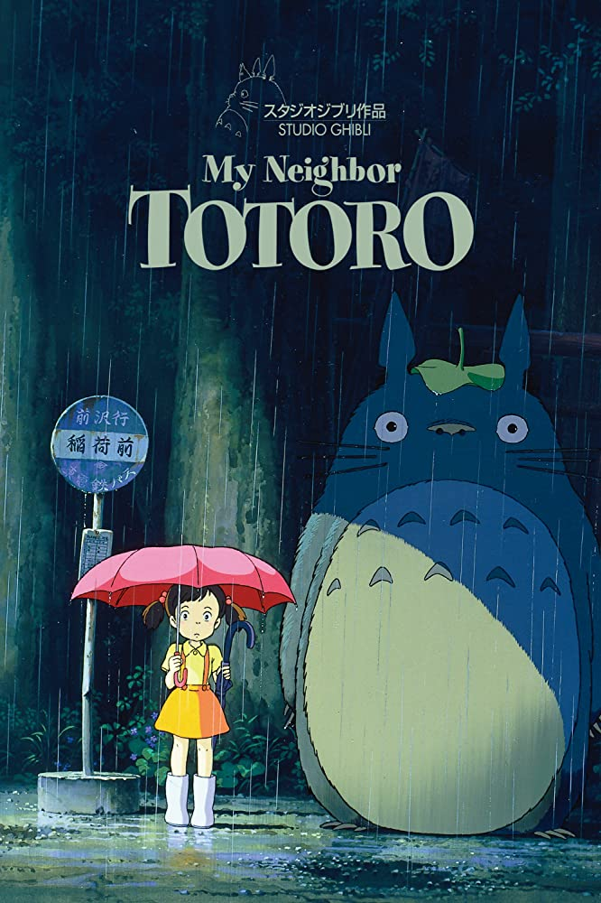
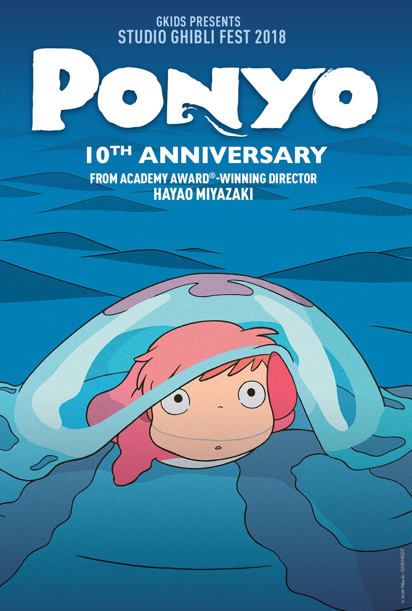

I believe comedy is the best way for people to get along
and come together. I think that step brothers is one of those films
that is both crude and endearing. It might not be a good childrens
film, but I highly recommend it to any family with teenagers.Watch Trailer
Knives Out
A dysfunctional family finds themselves caught in a murder
mystery and a renowned detective must figure out who the culprit is.
This film is a top pick because of its star studded cast and great
storytelling.Watch Trailer

My Neighbor Totoro
My Neighbor Totoro is such a classic movie and it’s very heartwarming to watch during
any time of the year. Hayao Miyazaki and Studio Ghibli perfectly captured the innocence of childhood
all while also tapping into the concept of admiring the beauty of nature. Definitely one of my favorite
films ever and I never get tired of watching itWatch Trailer
A Christmas Carol
A Christmas Carol is a classic story, with many retellings already having been made,
but I believe the 2009 animated film with Jim Carrey is one of the best iterations of the story,
thanks to Jim Carrey's fantastic performance as Ebenezer Scrooge. The visual effects of the movie
still hold up, even 11 years after the movie's original release, and the message will always be
timeless. Watch Trailer

Ponyo
The movie portrays a wholesome love story between a five-year-old Sosuke and a magical goldfish
named Ponyo, the young daughter of a sorcerer father and a sea-goddess mother. The movie is filled with pure
wonder and imagination. Fall in love with the characters as their puppy love is tested. Watch Trailer